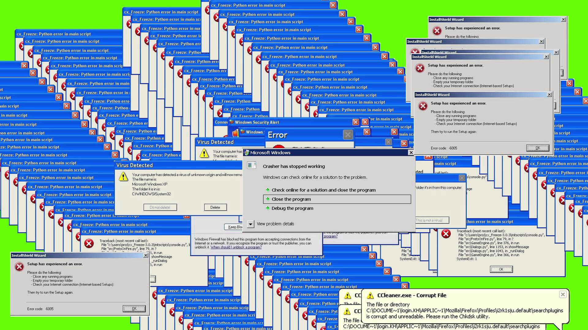

Now lets make a batch script that opens a notepad, and cmd. So first
Create a new Batch File and open that file. Once opened, copy + paste the folowing commands to the batch file.
Press CTRL + S inorder to save the changes made to your file. Then without closing notepad. make your way to that batch file and double click on it. After running, it should display a Command Prompt, if it does not display a Command Prompt then its most likely you did not follow the previous steps properly OR there is no accessable Command Prompt.
This following command will consistently open any any application but for this lesson we are going to open a borwser, notepad, and Command Prompt.
This is the code that does that, be very careful not to run this file.
It is very simple to understand.
At the start of the file I made a function.
I called it loopName.
I then put all the instrustions to be done in the function.
It looked like so:
start cmd
start https://www.google.com
start notepad
which is very simple to understand, it starts those
applications.
And once the function is done and its instrustions
are defined.
I went ahead a run the function by :goto loopName.
And now it runs that function
but at the end of the function, the function runs it self
agian. Creating a loop, that opens those applications over
and over and over agian.